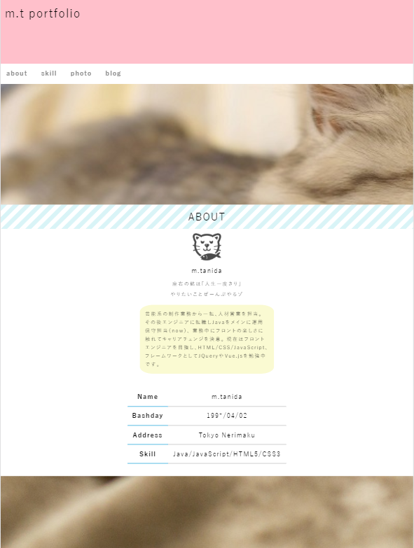
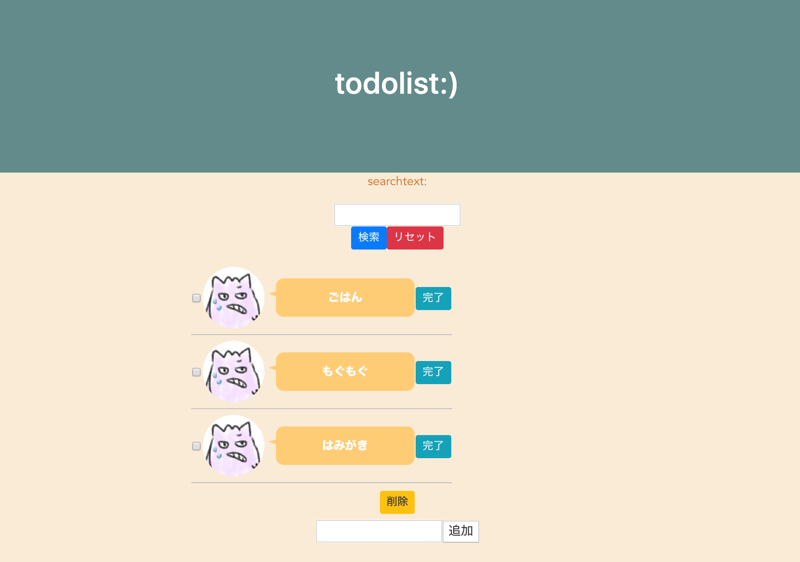
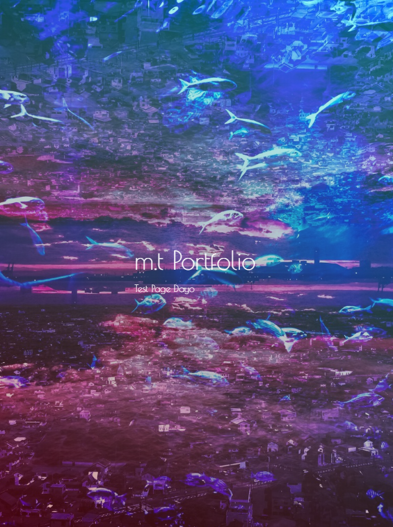

M.T PORTFOLIO
Challenge Everything
M.T PORTFOLIO
Challenge Everything

| NAME | m.tanida |
|---|---|
| BIRTHDAY | 199*/04/02 |
| SKILL | HTML/CSS/JS |
| LIKE | ALCOHOL♥ |
座右の銘は「人生いちどきり」
芸能系、ゲーム実況、イベント運営、アパレル、営業、人材管理、、
いろいろなことを経験してきました！
今はコード書くのが楽しくて、エンジニアという仕事に夢中です。
今後もエンジニアとして働いていきたいと思っています(^O^)
Java
運用保守、1年半～
改修メインのためガリガリ開発やってましたというわけではなく
自己学習で半年程度、あとは現場でコードを見て動きを覚える、という感じ。
テストが多かったのでJavaよりJUnitを書いてました
JavaScript
自己学習、4ヶ月～
フロントやりたい！と触り始めたJS。
Javaから入っているので自由度の高さに驚きつつ日々勉強中。
JQueryでWebサイトに動きをつけたりVue.jsでTodolistを作成したり
HTML/CSSだけでは出来ない動きをつけるってとても楽しいです。


HTML,CSS
自己学習、4ヶ月～
触ってていちばん楽しい。すぐ動いてくれるの好き。
JSと合わせて動きをつけるのがとても楽しいですね。
ブロガー時代にHTMLとCSSでカスタマイズしていました。
それがキッカケでSEに、という気持ちもあるので
今後も触っていきたいと思っています。
No1. PORTFOLIO

HTML/CSSを使用して初めて作ったWEBページ。
動きをつけたかったのでJSを使用してみたのですが
いろいろ調べてJQueryに落ち着きました。
IEの呪いを受けましたが、ブラウザ対応とレスポンシブ対応というものを学びました。
制作時期：2019/12～2020/1
制作期間：約45時間
エディタ：brackets
使用言語：HTML/CSS/JQuery
レスポンシブ対応：有
No2. TODOLIST

JSのフレームワークの勉強。友人にVue使いがいたので
Vue.jsにチャレンジしてみました。初アプリ制作。
タスク検索・追加・削除の機能を作成。
フレームワークの便利さを知った次第です。。
BootStrapにチャレンジしようと思いましたが時間がなく断念。
GitHub：t-mocho/todo-monyo
制作時期：2019/11～2019/12
制作期間：約60時間
エディタ：VScode
使用言語：HTML/CSS/Vue.js
レスポンシブ対応：無
No3. PORTFOLIO

いろいろ触った後にもう一度新たなポートフォリオを！
ということで、大胆かつシンプルを目指して作成。
いろんなサイトを見て参考にさせていただきました。
コピペが多かったわたしにメソッドを調べる重要性を教えてくれました（血涙）
GitHub:：t-mocho/portfolio
制作時期：2020/1～2020/2
制作時間：約40時間
エディタ：ATOM/brackets
使用言語：HTML/CSS/JQuery
レスポンシブ対応：有
No4. WARDPLESS

ブログ書きたいな。という思いでワードプレス触ってみました。
実際サーバをレンタルして、いざカスタマイズ！
テーマは「Simplify」をお借りしてます。PHPむずかしい。
今はサーバ上でカスタマイズしているため
今後はローカル環境を作って触っていきたいなと思ってます。
制作期間：臨時更新